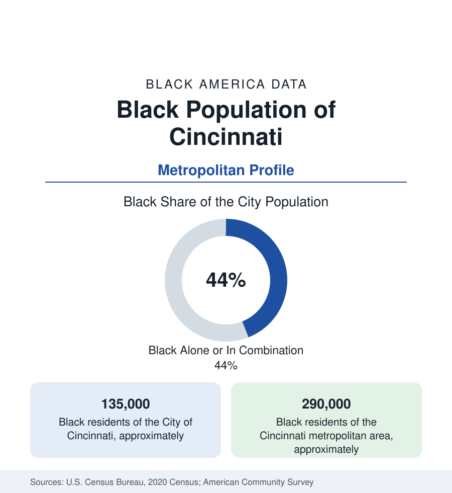

Black Cities
Black Cincinnati: The River City Between Freedom and Slavery's Shore
Cincinnati holds about 135,000 Black residents — over two-fifths of the city — in the border city where the Underground Railroad crossed the Ohio. The census profile.

Cincinnati holds about 135,000 Black residents — Black alone or in combination, roughly 44 percent of the Queen City — and about 290,000 across its tri-state metropolitan area. Cincinnati's Black history is the border made urban: a free-soil city on the Ohio River directly across from slaveholding Kentucky, a terminus of the Underground Railroad and a scene of the era's anti-Black riots in the same decades, and a twentieth-century industrial community whose West End and Avondale districts anchor the modern data.
The metro total of 290,000 counts the Kentucky and Indiana counties of the tri-state area, whose Black communities in Covington, Newport, and Florence are part of the same urban system.
The Border City's Founding Tension
Black Cincinnati dates to the city's first decades — a community of river workers, barbers, and caterers in the basin between the river and the hills, living under Ohio's Black Laws (which required bonds and barred testimony) and periodic mob violence (the riots of 1829 drove a large share of the community to found the Wilberforce Colony in Canada; those of 1836 and 1841 targeted the abolitionist press and the Black districts). Across the river, the same decades made the city a freedom gateway: the Lane Seminary debates of 1834 launched a generation of abolitionists, Levi Coffin's Cincinnati years made the city the 'Grand Central Station' of the Underground Railroad in his own account, and Harriet Beecher Stowe's Cincinnati residence supplied Uncle Tom's Cabin's Ohio River geography. The modern Freedom Center museum on the riverfront institutionalizes the record at the crossing point itself.
The West End, Avondale, and the Modern Map
The twentieth century's community centered on the West End — the basin district whose Laurel Homes (among the nation's first public housing) and whose Kenyon-Barr clearance for the expressway and industrial district displaced thousands in the 1950s and 1960s, in the era's most documented Cincinnati displacement — and on Avondale, the former streetcar suburb north of downtown that became, from the 1960s, the city's Black professional and institutional center (the district around Xavier University's edge, the hospitals of Pill Hill adjoining). The modern population spreads from those cores through the city's western and northern neighborhoods (Westwood, Price Hill's sections, College Hill, Bond Hill, Roselawn, Madisonville) and into the suburbs: Forest Park and Springdale (substantially Black suburbs of the northern corridor), Sharonville, Blue Ash's increment, and the Kentucky shore (Covington and Newport, with their own river-era Black communities) in the tri-state count.
Economy and Institutions
The Black workforce runs through the consumer-goods headquarters economy (Procter & Gamble's and Kroger's home city), the great hospital systems of Pill Hill, the public sector, GE Aerospace's suburban plants, and logistics along the river and the airport (CVG, in Kentucky, is the metro's cargo giant). Cincinnati Children's and the university medical center give the city an outsized health-workforce layer in the employment data. Institutions: Xavier and the University of Cincinnati carry the higher-education layer; the city's Black business tradition (from the antebellum caterers and coal dealers to the modern contractor and media layer) is documented in the business data at mid-scale; and the National Underground Railroad Freedom Center, the Cincinnati Black Theatre tradition, and the Avondale institutions anchor the cultural file. Black median income in the metro sits mid-pack in the Ohio set — above Cleveland's, below Columbus's — the three cities' modern ordering in one line.
Change and the Estimates
The metro's Black population grows slowly — the suburbs gaining, the city's total stabilizing after decades of decline, its Black share holding in the low-to-mid forties — in the older-Midwest pattern moderated by the headquarters economy. The displacement file (the West End's current redevelopment at the stadium district's edge) and the suburbanization curve are the live data. Across the river, the Kentucky suburbs' Black growth ties the profile to the Kentucky state file; the tri-state metro is, as the census draws it, one labor market in three states' tables.
Reading the Cincinnati Numbers
Cincinnati is the border profile: a Black community founded in the sight of slavery across a river, hardened by riot and clearance, and seated now across a prosperous headquarters metro. Its 290,000 residents are the Ohio River's Black center of gravity — the river that was once the boundary of freedom is, in the modern data, simply the middle of their metropolitan area.
More in Black Cities
Black Atlanta: Population, Distribution, and Growth of a Black Metropolis
Metro Atlanta holds more than two million Black residents — roughly one in three, second only to New York. The suburban distribution, migration history, and composition of Black Atlanta in the census data.
Black New York: The Largest Black Population in America
The New York metropolitan area holds about 3.4 million Black residents — more than any metro in the nation — and the city itself about two million. The census profile.
Black Washington: The District and the Metro
The Washington metro holds about 1.6 million Black residents, and the District itself — long a majority-Black city — now records a Black share near 41 percent. The census profile.
Source: U.S. Census Bureau, 2020 Census; American Community Survey; Population Estimates Program.